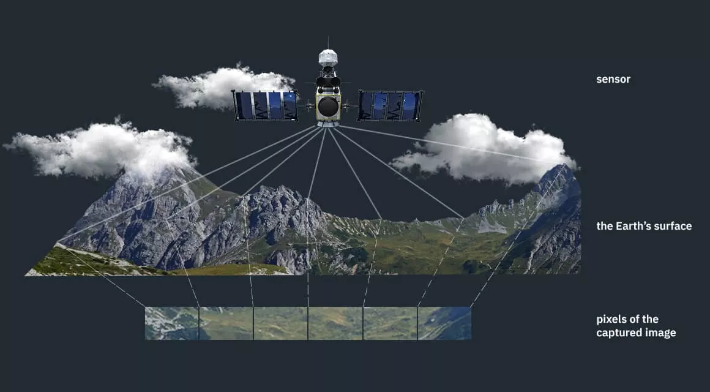
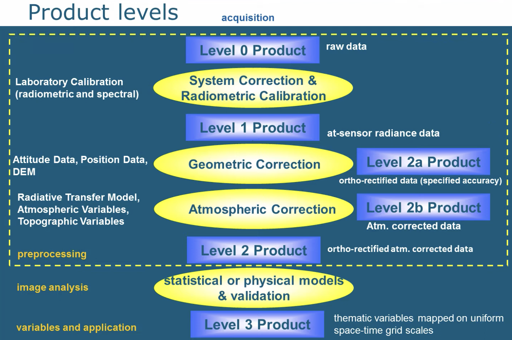
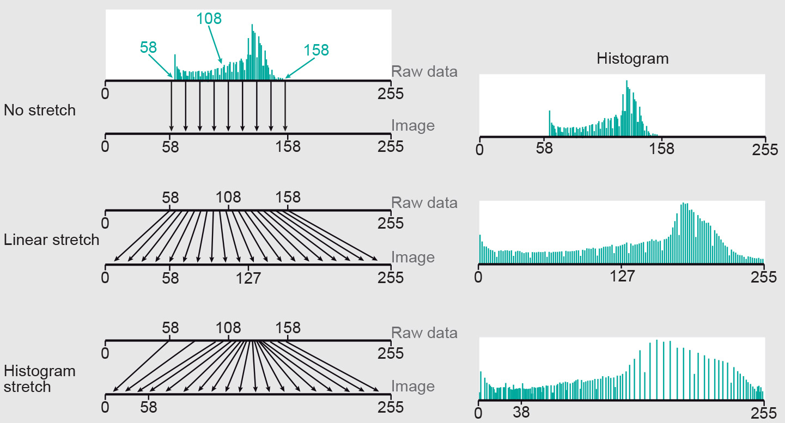
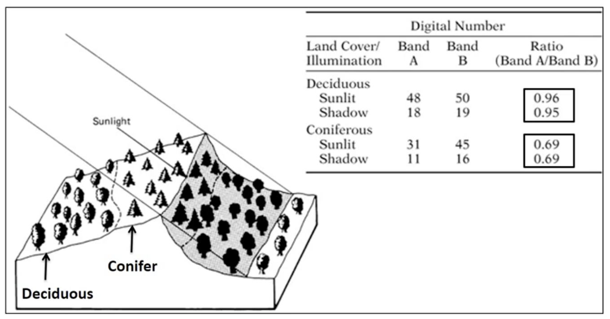
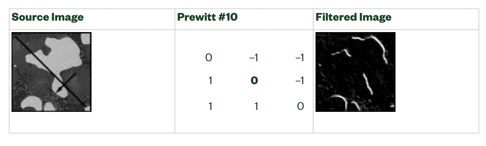
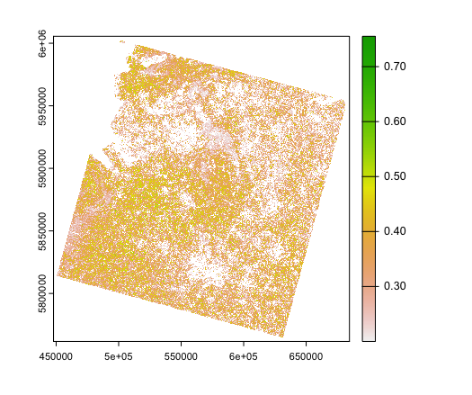
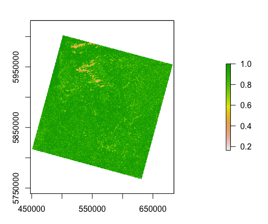

flowchart LR A(Acquisition) --> B(Pre-processing) B --> C(Image Analysis) C --> D(Products) D --> E(Application)

Here shows a basic flow of how remote sensing is used in practice, it includes a few steps from data collection. As there are many factors influencing the RS image acquisition like, sensor characteristics, weather (particularly cloud cover), acquisition method (satellite or airborne) and others, remotely sensed images can contain flaws within them. Therefore, to improve image quality as a basis for further analysis, the most common step is carrying out corrections.
flowchart LR A(Acquisition) --> B(Pre-processing) B --> C(Image Analysis) C --> D(Products) D --> E(Application)
To talking about this processing chain we can introduce the product levels. And we will summary some main points about each correction.

These are some website helpful to understand each process,
The Importance of Radiometric Calibration
Geometric Corrections in Remote Sensed Image
What is Atmospheric Correction in Remote Sensing?
and following are some summaries.
Radiometric Calibration
Radiometric Calibration refers to the ability to convert the digital numbers recorded by satellite imaging systems into to spectral radiance, reflectance, or brightness temperatures.
The purpose is to eliminate the error of the sensor itself and determine the accurate radiation value at the entrance of the sensor.
Methods include laboratory calibration, on-board/satellite calibration, and site calibration. Note that different sensors have different radiation calibration formulas.
Without radiometric calibration, you may see the following effects:
Geometric Correction
Acquisition of ground control points (GCP) : Use Ground Control Points (GCP) as a reference point for correct location data
Building a Sensor Model: formulate the relation between the current and the reference location data
Coordinate Transformation: Once a suitable sensor model is defined it can be applied to the image raw data to calculate the corrected coordinates of the pixel locations
Resampling of Pixel Values: The coordinate transformations shifts and rotates the pixel locations. These new locations do not fit into a regular grid of the raster files. Therefore, the pixel values need to be resampled to assign each grid cell one raster values.
Ground Control Points (GCPs) are defined as points on the surface of the earth of known location used to geo-reference Landsat Level-1 data. GCPs are updated as needed to continually improve Landsat data. GCPs can be downloaded and used as reference data.
Root mean squared error can be used to measure the difference between locations that are known and locations that have been interpolated or digitized or resampled. \[\begin{equation} RMS_{error}=\sqrt{(X^{'}-X_{orig}+Y^{'}-Y_{orig})^2} \end{equation}\]
Atmospheric Correction
removes the scattering and absorption effects from the atmosphere to obtain the surface reflectance characterizing (surface properties)
Methods can be divided into 2 types according to the results of the correction:
| Type | Notes |
|---|---|
| Relative atmospheric correction method | for example the dark object subtraction (DOS), histogram adjustment and psuedo-invariant features (PIFs) |
| Absolute atmospheric correction method | there are some transfer models or codes such as MODTRAN 4+ and 6S can be used to deal with scattering and absorption, this is called model-based atmospheric correction methods. We can also use the empirical line correction by take measurements in site using a field spectrometer. |
Orthorectification Correction
orthorectification is the process of improving the horizontal accuracy of imagery.
We can use some orthorectification algorithms to deal with the distortion, also, softerwares like QGSIS and SAGA GIS can be helpful.
Georectify take an image that has not been adjusted to be in a known coordinate system, and put it into a known coordinate system.
Orthorectify take an image in its original geometry and very accurately adjust it so that it is in a known coordinate system, with distortions due to topographic variation corrected.
Image enhancement algorithms are applied to remotely sensed data to improve the appearance of an image for human visual analysis or occasionally for subsequent machine analysis. There is no such thing as the ideal or best image enhancement because the results are ultimately evaluated by human.
Image enhancement is attempted after the image is corrected for geometric and radiometric distortion. here we will summarize some of the most popular enhancements techniques.
Contrast Enhancement
Most of the satellite images lack adequate contrast with nearly uniform tones of gray.This results in difficulty in interpret the image. Reasons for low contrast of image can be various. For example, the objects may have a nearly uniform electromagnetic response at the wavelength band of energy, scattering of electromagnetic energy by the atmosphere can reduce the contrast of a scene…
Contrast enhancement techniquest (also referred to as contrast stretching) expand the range of brightness values in an image so that the image can be efficiently displayed in a manner desired by the analyst.
Contrast enhancement techniques can be divided into 2 categories.
| Type | Notes |
|---|---|
| Linear Contrast Enhancement | including Minimum-Maximum Contrast Stretching, Percentage Linear and Standard Deviation Stretching,Piecewise Linear Contrast Stretching. They differ in the Stretching Function. Like the picture below shows how Minimum-Maximum Contrast Stretching works. |
| Nonlinear contrast enhancement stretching | one applied of the most useful enhancements is histogram equalization. In this technique, histogram of the original image is redistributed to produce a uniform population density. The whole process can be a little complex, which can be found here at Page 8 |

Band Ratioing
Sometime differences in brightness value from identical surface materials are caused by topographic slope and aspect, shadow, or seasonal change in sun illumination angle and intensity. These conditions may hamper ability of interpreter or classification algorithm to identify correctly surface materials or land use in a remotely sensed image. We can use Band Ratios to enhance the spectral differences between bands and to reduce the effects of topography.
Basically, Band Ratioing is about doing band algebra, dividing one spectral band by another produces an image that provides relative band intensities.The ratio is the numerator divided by the denominator
There are many defined indexes show us the way to do band ratioing, such as The Normalised Difference Vegetation Index (NDVI) which is based on the fact that healthy and green vegetation reflects more in the NIR but absorbs in the Red wavelength. \[\begin{equation} NDVI=\frac{NIR-Red}{NIR+Red} \end{equation}\]
There are many other ratios, all of which are detailed on the Index Database

Spatial filtering
A characteristic of remotely sensed image is a parameter called spatial frequency; defined as the number of changes in brightness value per unit distance for any particular part of an image.
Spatial filters serve a variety of purposes, such as detecting edges along a specific direction, contouring patterns, reducing noise, and detail outlining or smoothing. Filters smooth, sharpen, transform, and remove noise from an image so that you can extract the information you need.
Spatial filtering applies the idea of convolution, which is an algorithm that consists of recalculating the value of a pixel based on its own pixel value and the pixel values of its neighbors weighted by the coefficients of a convolution kernel. Basically, to acheive Spatial Filtering we firstly decide a window, that is the size of the convolution kernel(3 × 3, 5 × 5…can be either square or rectangular). And according to different types of convolutions:gradient, Laplacian, smoothing, and Gaussian, different convolution kernel contents or the weight will be used to calculated the new value of the central kernel pixel.
From the perspective of mathematical calculation, it is to construct a matrix, multiply the elements of the matrix by the value of the corresponding pixel, and then add up the products as the new value of the central pixel. Like the picture blew illustrates.

Spatial filters fall into two categories:
| Type | Notes |
|---|---|
| Highpass filters | emphasize significant variations of the light intensity usually found at the boundary of objects. Highpass frequency filters help isolate abruptly varying patterns that correspond to sharp edges, details, and noise. |
| Lowpass filters | attenuate variations of the light intensity. Lowpass frequency filters help emphasize gradually varying patterns such as objects and the background. They have the tendency to smooth images by eliminating details and blurring edges. |
Specific tye of Spatial Filter and its application can be found in here
There are also other way to process the image and gain information we needed, like Texture, Data fusion and PCA, here I am trying to use R language to achieved them. In addition, paying special attention on them in the application part.
Here I will use R to achieve some enhancement methods. Firstly we use pull() to load our raster layers into a stack, then we can easily pick out one of the band.
# List your raster files excluding band 8 using the patter argument
m1<-dir_info(here::here("LC09_L2SP_203023_20220326_20220328_02_T1")) %>%
dplyr::filter(str_detect(path, "[1B23456790].TIF")) %>%
dplyr::select(path) %>%
pull() %>%
as.character() %>%
# Load our raster layers into a stack
terra::rast()referring the equation given above, the NDVI can be calculated quickly,
m1_NDVI <- (m1$LC09_L2SP_203023_20220326_20220328_02_T1_SR_B5 - m1$LC09_L2SP_203023_20220326_20220328_02_T1_SR_B4 ) / (m1$LC09_L2SP_203023_20220326_20220328_02_T1_SR_B5 + m1$LC09_L2SP_203023_20220326_20220328_02_T1_SR_B4)
and the glcm package can help us to do the Texture Analysis.
glcm(x, n_grey = 32, window = c(3, 3), shift = c(1, 1), statistics = c("mean", "variance", "homogeneity", "contrast", "dissimilarity", "entropy", "second_moment", "correlation"), min_x=NULL, max_x=NULL, na_opt="any", na_val=NA, scale_factor=1, asinteger=FALSE)
#statistics means a list of GLCM texture measures to calculateif we usd the homogeneity measure the results is shown blow

Homogeneity was a measure of the similarity of pixel values in the neighborhood defined by the processing window, ranging from 0.0 (completely dissimilar) to 1.0 (all cells having equivalent values) (Lane CR et al. 2014)
the video Introduction to textural classification in QGIS 3.10 shows basic concept of Texture Analysis as well as how to do it in QGIS.
For PCA, rasterPCA can be helpful to reduce the dimensionality of our data.
Texture Analysis in Classification
In remote sensing image, texture means the spatial variation of the pixels in an small area. So, it is different from what the image visually looks like. Coburn, C. A., & Roberts, A. C. (2004) pointed out that of all the spatial information that can be extracted from remotely sensed data, texture may be the most useful for segmenting images. Therefore, Texture Analysis can provide information that the visual interpretation cannot. when we are trying to distinguish the geographic entities or the land cover. Here is a example about how texture analysis can be combined with Random Forest technique to accurately differentiate land covers of urban vegetated areas.
Feng Q et al. (2015) achieved urban vegetation mapping by using UAV Remote Sensing data. Its whole processes include 3 parts:data acquisition and preprocessing;image classification; accuracy analysis. The Random Forest and texture analysis were introduced in the second part.
For the texture analysis, six least correlated texture measures according to Szantoi Z et al. (2013) were used in the study(mean (MEA), standard deviation (STD), homogeneity (HOM), dissimilarity (DIS), entropy (ENT) and angular second moment (ASM)). Besides, only Green band was used for the texture statistics and they were second-order (co-occurrence) textures.

find more at Texture Metrics Background
Here, we skip the steps the author calculated the textures, just remember that 9 texture window sizes were chosen and texture features derived at different window sizes were added separately as additional ancillary bands to the RGB images for further classification.
We will not talk about Random Forest too much here, it is a supervised classification and the UAV orthophotos and ancillary texture features were inputs.
Here is the figure in the paper which shows 2 original RGB images. According to field survey and the aim of the project, three vegetated land covers were chosen as follows: grass, trees and shrubs

And here is the results of classification. For the picture below, the GRB-only means only used GRB bands as inputs while the RGB+GT31 means the texture metrics with the moving windows 31 × 31 (GT31) included. So, this figure depicts the differences before and after the inclusion of texture features. We can easily see that both Image-A and Image-B show some “salt and pepper” effects.And the inclusion of texture improves the classification accuracy from a visual point of view. This is because the inclusion of texture increases the between-class separability and tends to remove small isolated groups of pixels.

In addition, if looking at the details, we can see that some part of the area with tree, grass and bare soil come together, some pixels are misclassified in RGB-only classification. This may due to tree, dead shrubs and bare soil share similar colors. But these misclassifications can be improved after the inclusion of six texture features at window size 31.
In conclusion, this study manifests that the including of texture features can increase the classification accuracy when differentiating land covers of urban vegetated areas. It also shows us the impact of texture window size on classification accuracy, which turns out has an inverted U relationship.
However, personally speaking, I think there are still some points that the author hasn’t provided enough information. For example, why the Second-order metrics was chosen here instead of the First-Order one? Will there be any difference of the classification results if we use the latter? In addition, I am not very sure about why the experiment used 6 texture measures. Does the contribution of these texture measures to the classification make a difference?
As can be seen from the flow chart and product levels diagram in 3.1.1, there is still a long data processing process between the creation of a remote sensing image by the sensor and the use of it to solve practical problems. This shows that remote sensing is not equal to taking a picture of the ground in a very distant place. The study of correction has deepened my understanding of electromagnetic radiation and the influence of different factors on radiation. From the perspective of problem solving, it allows us to clearly understand what happens to different radiations from generation to acceptance by the sensor. For example, Radiometric Calibration means that the sensor itself may have errors, Geometric Correction shows the influence of topography of the terrain on the image, and Atmospheric Correction shows the weakening and scattering by the atmosphere in the entire electromagnetic wave radiation process.
Images are a way of expressing information, and remote sensing images are no exception. For ordinary images, we can use the components of the image space for interpretation, that is, interpretation based on vision. For example, vegetation is green and water is blue. Therefore, on the one hand, the contrast enhancement of remote sensing images can expand the difference between pixel value of objects, which is very beneficial to image interpretation. In many cases, we will adjust the histogram to highlight the features we want to observe. In addition, the segmented gray-scale stretching can target the dark and bright parts of the image to suppress low-frequency parts or enhance high-frequency parts as you decide.
However, the land use distribution of real scenes is often complex, and when the surface area of the image cover is large, it is difficult to distinguish geographical entities only by the difference in hue. The misclassified situation will happen especially in complex terrain (such as mountainous terrain). At this time, the importance of spatial structure information is highlighted. Image texture is useful for the separation of different categories of regions, which is related to the visual perception of roughness or smoothness of image features. A large number of studies have shown that adding texture information as a band to image classification is conducive to improving the accuracy of the classification structure. This reflects the advantage of image enhancement processing, that is, the ability to obtain spatial information.
Furthermore, in the actual process, some difficulties may be encountered in image enhancement processing. For example, when the image quality is not good, some noise may also be enhanced. So this is like a double-edged sword. When using an enhancement algorithm, you should consider distinguishing between useful information and noise in the image. Ali et al. (2001) pointed out that for noisy remote sensing images, different edge detection operators detect different edge maps. Some of these algorithms do not perform well. This means that we need to be careful when doing image enhancement, otherwise we may go the wrong way。
Feng, Q., Liu, J., & Gong, J. (2015). UAV remote sensing for urban vegetation mapping using random forest and texture analysis. Remote sensing, 7(1), 1074-1094.
Coburn, C. A., & Roberts, A. C. (2004). A multiscale texture analysis procedure for improved forest stand classification. International journal of remote sensing, 25(20), 4287-4308.
Szantoi, Z., Escobedo, F., Abd-Elrahman, A., Smith, S., & Pearlstine, L. (2013). Analyzing fine-scale wetland composition using high resolution imagery and texture features. International Journal of Applied Earth Observation and Geoinformation, 23, 204-212.
Lane, C. R., Liu, H., Autrey, B. C., Anenkhonov, O. A., Chepinoga, V. V., & Wu, Q. (2014). Improved wetland classification using eight-band high resolution satellite imagery and a hybrid approach. Remote sensing, 6(12), 12187-12216.
Ali, M., & Clausi, D. (2001). Using the Canny edge detector for feature extraction and enhancement of remote sensing images. IEEE International Symposium on Geoscience and Remote Sensing (IGARSS), 5, 2298-2300.